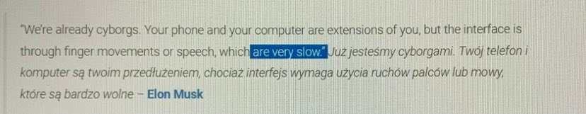
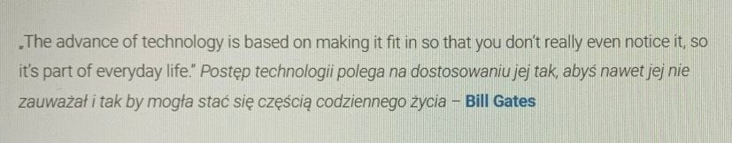
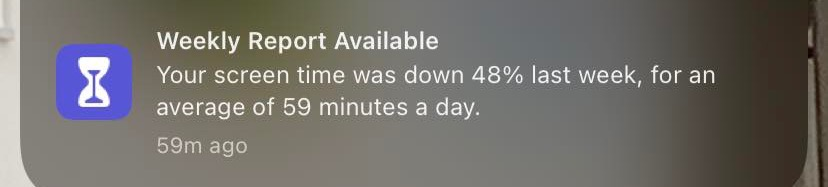
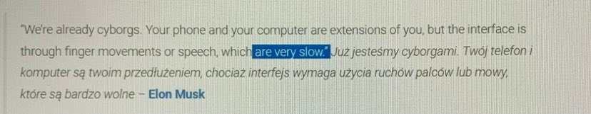
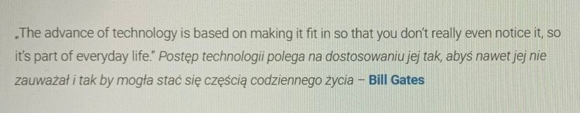
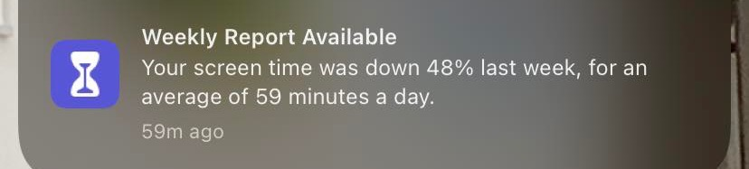

~ Vanilla Sky ⭐
Zycie nie byloby takie slodkie bez odrobiny gorzkosci.
~ Matematyczka LO
Im mniej wiesz tym lepiej spisz
~ Mark Twain
it aint what you dont know that gets you into trouble. its what you know for sure that just aint so.
~ Kacper Pitala ⭐
Przechodzenie (np. przez drzwi) jest widocznie czyms znaczacym dla naszego mozgu. (czyt. zamyka rozdzialy, pomaga mozgowi ukladac rzeczy)
[...] A co ciekawe wystarczy sobie wyobrazic przechodzenie przez drzwi, zeby wychowac ten efekt...
link~ Terencjusz
Nic co ludzkie nie jest mi obce.
~ flacamun3ca
Everyone needs to stop talking.
~ The Kid Laroi
Don't make permanent decisions based on temporary feeling.
~ Droga Zen
Zarówno w życiu, jak i w sztuce kultury Dalekiego Wschodu, najwyżej sobie cenią spontaniczność, czy też naturalność. Jest ona nieomylną oznaką szczerości, cechującą działanie, które nie jest wystudiowane, ani wymuszone.
~Droga Zen 2
Kiedy chodzisz, po prostu chodz. Kiedy siedzisz po prostu siedz. Najwazniejsze, zebys sie nie kiwal na boki.
~ Droga Zen 3
Ostatecznie jedynym wyjsciem z paralizujacych drgawek jest rzucenie sie w wir dzialania bez ogladania sie na konsekwencje.
~Setty
kazdy powinien byc swoim najwiekszym fanem
~ Roddy Ricch
And i cannot sell my soul.
~ Tamara Lepicka
Niczego, co robilam, nigdy nie robilam tak, jak inni. Zawsze robilem wszystko jakos inaczej. Chcialam robic, to co chce.
~ Kolo emocji
Ekstaza, Zachwyt, Przerazenie, Zdumienie, Cierpienie, Nienawisc, Wscieklosc, Czujnosc
Dont A2Q ⭐
Nie odpowiadaj ma pytanie. Zastanow sie dlaczego je ktos zadal i odpowiedz pytaniem... es
Gestures ⭐
Gesty tez sa nieodlaczna cecha czlowieka...
Addiction ⭐⭐⭐
Uzaleznienie wtedy, gdy robisz cos bezwarunkowo, nieswiadomie ...i dlatego nie oplaca sie w to wchodzic.
Naturalnosc
Zgodny ze zwyklym porzadkiem rzeczy, zrozumialy sam przez sie, szczery, niewymuszony
Naturalnosc 2
Jak bardzo jestes podatny na zmuszanie ciebie do czegos?
Fridge ⭐
Szczescie osiagniesz wtedy gdy za kazdym razem jak zasiadziesz do stolu zjesz to co naprawde chcesz, a nie to co znajdziesz w lodowce.
Why? ⭐
For what? Po co? Za kazda wypowiedzia stoi jakis powod. Wyzej trzeba myslec, wyzej!
Better The Best ⭐
Zamiast zastanawiac sie co mogles zrobic lepiej, pomysl co mozesz robic najlepiej.
Running ⭐
Chwytaj moment, poczuj sie jak w filmie! Przekaz ludziom troche pozytywnej energii, usmiechu :D
Niedosyt ⭐
Zostaw ten niedosyt ;) W pracy, rozmowach... bedziesz to bardziej rozpamietywal, myslal o tym wiecej.
One Thread ⭐
Proponuje leciec na jednym watku, unikac rozwarstwiania. Multi-tasking is not included.
Pamietasz jak potrafiles zamyslac sie cala droge?
More&more?
Nie ma co nabodzcowywac sie. Uciekaja informacje.
Productivity ⭐
Nie powinno ci zalezec na znajdywaniu sobie czasu na bycie produktywnym, a znajdywaniu produktywnosci w czasie jaki masz.
Acceptance ⭐
Pogodz sie z tym co od ciebie niezalezne. Zycie staje sie latwiejsze.
Confidence
Trzeba byc pewny siebie. Do takich swiat nalezy.
Intuition ✅
Intuicja moze byc czesto zgubna...
Decisions
Sprowadzasz wszystko do atomicznych warunkow i na podstawie swoich wartosci podejmujesz decyzje.
Empathy
umiejetnosc rozpoznawania emocji u innych
Depressed
If depressed => *MUZYKA*
Me >>> World
Jesli myslisz ze ze swiatem jest cos nie tak to najprawdopodobniej z toba.
Life Talk
Rozmowa o zyciowych czynnosciach i problemach?? Znajdziesz cos ciekawszego...!!!
Beautiful world
Swiat jest piekny, zmien sobie tylko soczewki, bo po co sie mamy dolowac.
Na sile..
Nie narzucaj sie nikomu, nie trzymaj go na sile. Zostaw ten niedosyt >>
Myslenie i czas
Na myslenie trzeba miec czas, a nie kazdy go ma...
Rozmowa
Rozmowa z innym czlowiekem pokazuje jaki naprawde jestes, jakie masz myslenie. To co wpada do ucha to jedno, a to co wychodzi z ust to drugie.
For fun ✅
Gdyby nie wizja zarobku (pieniedzy), tworzylbym lepszy material.
Kid Laugh
Nie smiej sie ze wszystkiego loool jaki kid
Help.
Pomoc musi byc dlugotrwala. To, ze dasz bezdomnemu hajs i sobie pojdziesz - nie bedzie wystarczajace. Przekazujmy sobie rady, rady na dobre zycie. Skads sie bierze ten smutek. Zrozum drugiego czlowieka i podaj mu reke.
Addictions
A tego, unikamy. Wszystko z umiarem pamietaj.
Music
Jesli stracisz rytm - zapodaj dobra muzyke!
SinusLife
Tak, tak, zycie to sinusoida. Wybaw sie dobrze, bo jutro bedzie mocny kac.
Filter
Musisz potrafic filtrowac tresci. Tu az sie roi od click-baitow...
Who u are
Nigdy nie zapominaj kim jestes, albo kim chcesz sie stac.
Tinder Easy
Jesli bede miec z toba 99% ratio (Spotify) umowisz sie ze mna?
Digital Life
Ogladajac filmy nie masz czasu na wlasne myslenie, tlumisz pytania o ktore twoje cialo pyta. Wiec slow down boy i pauzuj. Zastanawiaj sie, wyciagaj wnioski itp.
Coffee
Kawa i od razu wstaje na nogi. Ale pamietaj, tylko wtedy gdy jest ci potrzebna.
Think
Let me think. Then do.
Day n Night
Dzien po to zeby brac inspiracji, noc - by tworzyc.
Do not judge
Nie osadzaj, nie szukaj wad u innych, bo... po pierwsze jest duzo czynnikow ktore moge uzasadnic jego postawe, ktorych ty zas nie pojmiesz... po drugie - lepiej spojrz na siebie ;>
Better sentence...
To moglem powiedziec lepiej... ale przeciez taka sytuacja sie juz nie wydarzy, masz wymyslic uniwersalny sposob jak unikac bledow, a nie badac pojedyncze...
Stres
Nie skupiasz sie na tym nad czym powinienes, a o tym co ludzie o tobie pomysla. Mozg wtedy nie potrafi w pelni funkcjonowac, i wychodza jakies dziwne sklejki slowne..., nie masz pelnej przepustowosci. Wniosek: trzeba miec "wyrombane na ludzi", badz soba.
Stres 2
Nie mysl nad tym co bedziesz chcial powiedziec, nie dosc ze zestresujesz sie bardziej, to jeszcze bedzie to nienaturalne over all. Wszystko wyjdzie w praniu.
Przygotowanie<=>Stres
Pelen spontan, bo inaczej to nienaturalne wszystko, gadasz wtedy jak robot i sie stresujesz. Pokaz ze ci niezalezy, bo inaczej ktos powie ze jestes ego top i liczysz na cos wiecej. Czasem chcesz dobrze wypasc, ale czy musisz?
Nienaturalnosc wsrod znajomych
Czemu nie jestes soba wsrod znajomych? Im dalej tak udajesz tym bedzie gorzej. Nie takiego cie poznali, wiec masz sie inaczej zachowywac? Sredniawa, masz byc soba 24/7
Zawsze na nie!
Dlaczego zawsze sie sprzeciwiasz? To wynika z mojej natury. Jedna osoba ma pewna racje, o ktorej nie mam zdania, ale czuje ze moze byc w bledzie, wiec... chce sklonic druga osobe do myslenia, przejscie do fundamentalnych wartosci, i obalenia lub potwierdzenia tezy.
Przyjaciele
nie wypieraj sie swoich znajomych, oni cie uksztltowali, ale nie udawaj ze wszystko jest ok, kazdy chce sie rozwijac jesli sie od nich oddalisz to nie wypiraj sie ich, a oni nie powinni sie wypirac ciebie, powinniscie sie wspierac.
 




